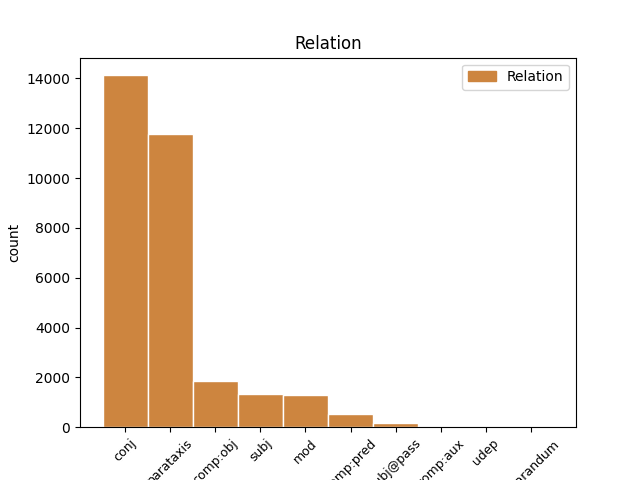
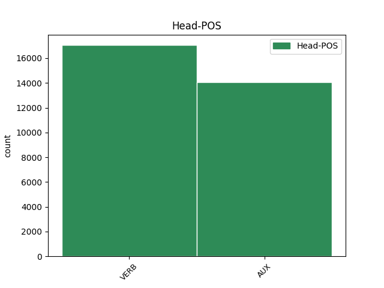
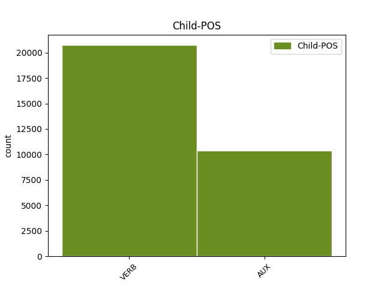

Distribution of features within this leaf



Agreement Rules sorted by frequency.
1 Vizepräsidentin _ _ _ _ 0 _ _ _
2 Judy _ _ _ _ 0 _ _ _
3 Qua _ _ _ _ 0 _ _ _
4 erklärte erklären VERB VVFIN Mood=Ind|Number=Sing|Person=3|Tense=Past|VerbForm=Fin 0 _ _ _
5 , _ _ _ _ 0 _ _ _
6 der _ _ _ _ 0 _ _ _
7 Gewinn _ _ _ _ 0 _ _ _
8 des _ _ _ _ 0 _ _ _
9 Unternehmens _ _ _ _ 0 _ _ _
10 werde werden AUX VAFIN Mood=Ind|Number=Sing|Person=3|Tense=Pres|VerbForm=Fin 4 comp:obj _ _
11 durch _ _ _ _ 0 _ _ _
12 die _ _ _ _ 0 _ _ _
13 Reduzierung _ _ _ _ 0 _ _ _
14 nicht _ _ _ _ 0 _ _ _
15 negativ _ _ _ _ 0 _ _ _
16 beeinflusst _ _ _ _ 0 _ _ _
17 . _ _ _ _ 0 _ _ _
Disagree Examples:
1 Mit _ _ _ _ 0 _ _ _
2 der _ _ _ _ 0 _ _ _
3 bundesweiten _ _ _ _ 0 _ _ _
4 Computerinitiative _ _ _ _ 0 _ _ _
5 " _ _ _ _ 0 _ _ _
6 Helft helfen VERB VVIMP Mood=Imp|Number=Plur|Person=2|VerbForm=Fin 0 _ _ _
7 mit _ _ _ _ 0 _ _ _
8 : _ _ _ _ 0 _ _ _
9 Coole _ _ _ _ 0 _ _ _
10 Schule _ _ _ _ 0 _ _ _
11 macht machen VERB VVFIN Mood=Ind|Number=Sing|Person=3|Tense=Pres|VerbForm=Fin 6 conj _ _
12 computerfit _ _ _ _ 0 _ _ _
13 " _ _ _ _ 0 _ _ _
14 will _ _ _ _ 0 _ _ _
15 der _ _ _ _ 0 _ _ _
16 Konzern _ _ _ _ 0 _ _ _
17 Kraft _ _ _ _ 0 _ _ _
18 Jacobs _ _ _ _ 0 _ _ _
19 Suchard _ _ _ _ 0 _ _ _
20 Schulen _ _ _ _ 0 _ _ _
21 das _ _ _ _ 0 _ _ _
22 lang _ _ _ _ 0 _ _ _
23 ersehnte _ _ _ _ 0 _ _ _
24 Arbeiten _ _ _ _ 0 _ _ _
25 mit _ _ _ _ 0 _ _ _
26 PCs _ _ _ _ 0 _ _ _
27 ermöglichen _ _ _ _ 0 _ _ _
28 . _ _ _ _ 0 _ _ _
1 Zwischen _ _ _ _ 0 _ _ _
2 dem _ _ _ _ 0 _ _ _
3 19. _ _ _ _ 0 _ _ _
4 und _ _ _ _ 0 _ _ _
5 23. _ _ _ _ 0 _ _ _
6 März _ _ _ _ 0 _ _ _
7 stellen stellen VERB VVFIN Mood=Ind|Number=Plur|Person=3|Tense=Pres|VerbForm=Fin 0 _ _ _
8 Unternehmen _ _ _ _ 0 _ _ _
9 in _ _ _ _ 0 _ _ _
10 Frankfurt _ _ _ _ 0 _ _ _
11 am _ _ _ _ 0 _ _ _
12 Main _ _ _ _ 0 _ _ _
13 auf _ _ _ _ 0 _ _ _
14 der _ _ _ _ 0 _ _ _
15 ersten _ _ _ _ 0 _ _ _
16 Fachmesse _ _ _ _ 0 _ _ _
17 Light _ _ _ _ 0 _ _ _
18 + _ _ _ _ 0 _ _ _
19 Building _ _ _ _ 0 _ _ _
20 ihre _ _ _ _ 0 _ _ _
21 Ideen _ _ _ _ 0 _ _ _
22 zur _ _ _ _ 0 _ _ _
23 zentralen _ _ _ _ 0 _ _ _
24 Steuerung _ _ _ _ 0 _ _ _
25 verschiedener _ _ _ _ 0 _ _ _
26 Haushaltsgeräte _ _ _ _ 0 _ _ _
27 vor _ _ _ _ 0 _ _ _
28 ( _ _ _ _ 0 _ _ _
29 siehe sehen VERB VVIMP Mood=Imp|Number=Sing|Person=2|VerbForm=Fin 7 parataxis _ _
30 auch _ _ _ _ 0 _ _ _
31 Ausgabe _ _ _ _ 0 _ _ _
32 22/99 _ _ _ _ 0 _ _ _
33 der _ _ _ _ 0 _ _ _
34 c't _ _ _ _ 0 _ _ _
35 ) _ _ _ _ 0 _ _ _
36 . _ _ _ _ 0 _ _ _
1 Für _ _ _ _ 0 _ _ _
2 die _ _ _ _ 0 _ _ _
3 seit _ _ _ _ 0 _ _ _
4 Anfang _ _ _ _ 0 _ _ _
5 Juli _ _ _ _ 0 _ _ _
6 aufgetretenen _ _ _ _ 0 _ _ _
7 Pannen _ _ _ _ 0 _ _ _
8 beim _ _ _ _ 0 _ _ _
9 T-Online-Zugang _ _ _ _ 0 _ _ _
10 ( _ _ _ _ 0 _ _ _
11 siehe sehen VERB VVIMP Mood=Imp|Number=Sing|Person=2|VerbForm=Fin 0 _ _ _
12 http://www.heise.de/newsticker/data/ad-15.07.97-000/ _ _ _ _ 0 _ _ _
13 ) _ _ _ _ 0 _ _ _
14 will wollen AUX VMFIN Mood=Ind|Number=Sing|Person=3|Tense=Pres|VerbForm=Fin|VerbType=Mod 11 parataxis _ _
15 die _ _ _ _ 0 _ _ _
16 Deutsche _ _ _ _ 0 _ _ _
17 Telekom _ _ _ _ 0 _ _ _
18 jetzt _ _ _ _ 0 _ _ _
19 allen _ _ _ _ 0 _ _ _
20 Nutzern _ _ _ _ 0 _ _ _
21 der _ _ _ _ 0 _ _ _
22 neuen _ _ _ _ 0 _ _ _
23 T-Online-Software _ _ _ _ 0 _ _ _
24 eine _ _ _ _ 0 _ _ _
25 Entschädigung _ _ _ _ 0 _ _ _
26 zahlen _ _ _ _ 0 _ _ _
27 - _ _ _ _ 0 _ _ _
28 und _ _ _ _ 0 _ _ _
29 zwar _ _ _ _ 0 _ _ _
30 unabhängig _ _ _ _ 0 _ _ _
31 davon _ _ _ _ 0 _ _ _
32 , _ _ _ _ 0 _ _ _
33 ob _ _ _ _ 0 _ _ _
34 sie _ _ _ _ 0 _ _ _
35 von _ _ _ _ 0 _ _ _
36 dem _ _ _ _ 0 _ _ _
37 Problem _ _ _ _ 0 _ _ _
38 betroffen _ _ _ _ 0 _ _ _
39 waren _ _ _ _ 0 _ _ _
40 oder _ _ _ _ 0 _ _ _
41 nicht _ _ _ _ 0 _ _ _
42 . _ _ _ _ 0 _ _ _
1 Bereits _ _ _ _ 0 _ _ _
2 im _ _ _ _ 0 _ _ _
3 August _ _ _ _ 0 _ _ _
4 hatte haben AUX VAFIN Mood=Ind|Number=Sing|Person=3|Tense=Past|VerbForm=Fin 0 _ _ _
5 Seagate _ _ _ _ 0 _ _ _
6 auf _ _ _ _ 0 _ _ _
7 dem _ _ _ _ 0 _ _ _
8 Intel _ _ _ _ 0 _ _ _
9 Developer _ _ _ _ 0 _ _ _
10 Forum _ _ _ _ 0 _ _ _
11 in _ _ _ _ 0 _ _ _
12 San _ _ _ _ 0 _ _ _
13 Jose _ _ _ _ 0 _ _ _
14 in _ _ _ _ 0 _ _ _
15 Zusammenarbeit _ _ _ _ 0 _ _ _
16 mit _ _ _ _ 0 _ _ _
17 APT _ _ _ _ 0 _ _ _
18 Technologies _ _ _ _ 0 _ _ _
19 und _ _ _ _ 0 _ _ _
20 Vitesse _ _ _ _ 0 _ _ _
21 Semiconductor _ _ _ _ 0 _ _ _
22 einen _ _ _ _ 0 _ _ _
23 ersten _ _ _ _ 0 _ _ _
24 Prototypen _ _ _ _ 0 _ _ _
25 einer _ _ _ _ 0 _ _ _
26 Festplatte _ _ _ _ 0 _ _ _
27 mit _ _ _ _ 0 _ _ _
28 SATA-Interface _ _ _ _ 0 _ _ _
29 vorgeführt _ _ _ _ 0 _ _ _
30 ( _ _ _ _ 0 _ _ _
31 siehe sehen VERB VVIMP Mood=Imp|Number=Sing|Person=2|VerbForm=Fin 4 parataxis _ _
32 Bild _ _ _ _ 0 _ _ _
33 ) _ _ _ _ 0 _ _ _
34 . _ _ _ _ 0 _ _ _
1 In _ _ _ _ 0 _ _ _
2 weniger _ _ _ _ 0 _ _ _
3 ferner _ _ _ _ 0 _ _ _
4 Zukunft _ _ _ _ 0 _ _ _
5 liegt liegen VERB VVFIN Mood=Ind|Number=Sing|Person=3|Tense=Pres|VerbForm=Fin 0 _ _ _
6 eine _ _ _ _ 0 _ _ _
7 Kamera _ _ _ _ 0 _ _ _
8 , _ _ _ _ 0 _ _ _
9 die _ _ _ _ 0 _ _ _
10 Pentax _ _ _ _ 0 _ _ _
11 bereits _ _ _ _ 0 _ _ _
12 als _ _ _ _ 0 _ _ _
13 Muster _ _ _ _ 0 _ _ _
14 zeigte _ _ _ _ 0 _ _ _
15 ( _ _ _ _ 0 _ _ _
16 siehe sehen VERB VVIMP Mood=Imp|Number=Sing|Person=2|VerbForm=Fin 5 parataxis _ _
17 Bild _ _ _ _ 0 _ _ _
18 ) _ _ _ _ 0 _ _ _
19 : _ _ _ _ 0 _ _ _